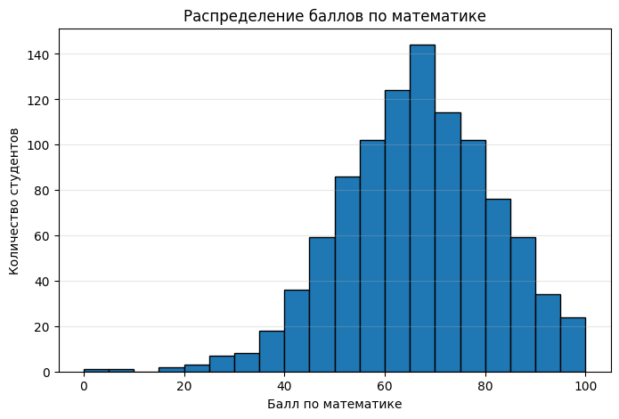
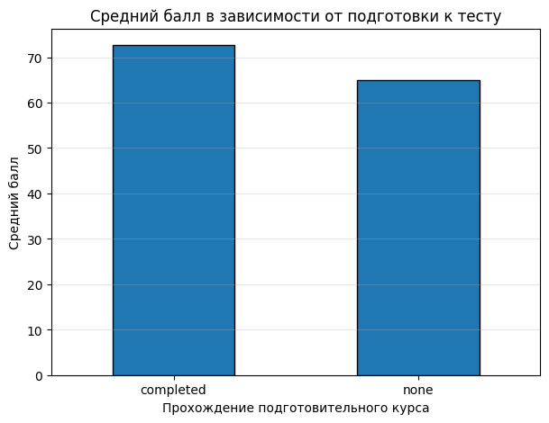
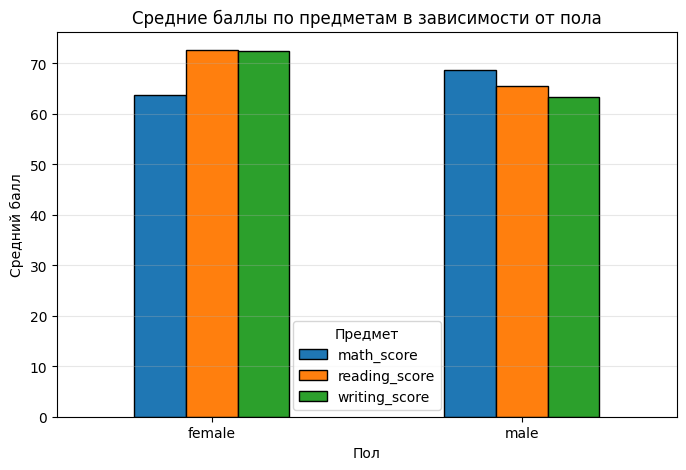
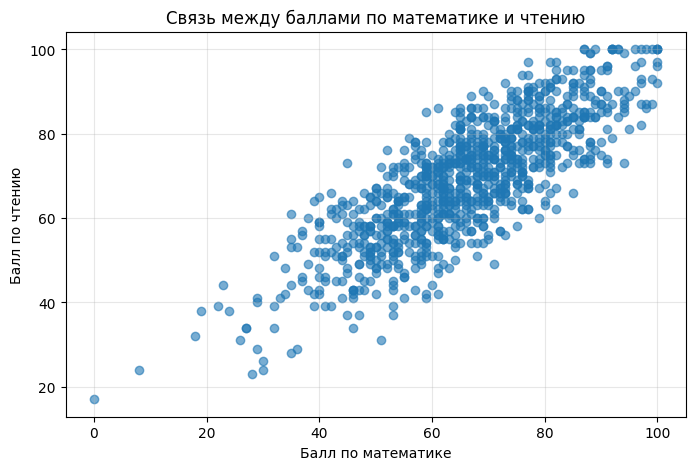
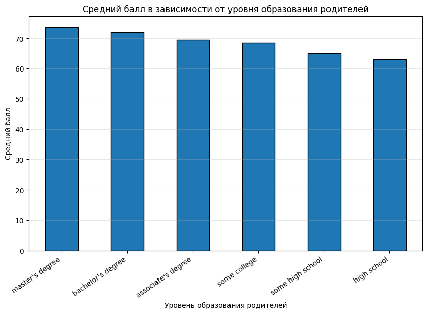
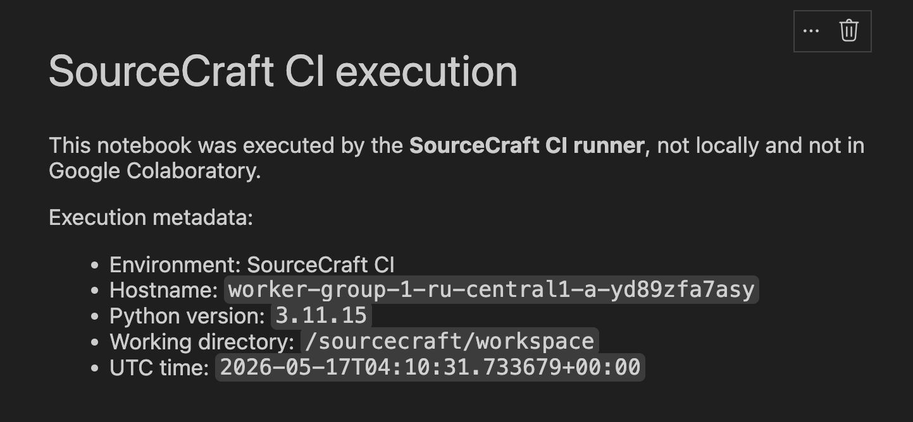

Лабораторная работа 9: Работа с графикой. Sourcecraft. CI/CD. Артефакты
Цели
- Освоить базовые приемы анализа табличных данных с использованием
pandas. - Научиться выполнять первичную обработку датасета: загрузку, проверку структуры, поиск пропусков и переименование столбцов.
- Создать новые признаки на основе исходных данных.
- Выполнить группировку и агрегацию данных для поиска закономерностей.
- Построить визуализации с помощью
matplotlib. - Настроить CI в SourceCraft для автоматического выполнения ноутбука и генерации артефактов.
Задачи
В рамках лабораторной работы требовалось:
- Сделать форк исходного репозитория на SourceCraft
- Заполнить пропуски в
ipynb-файле с заданием - Загрузить и обработать датасет
StudentsPerformance.csv - Рассчитать описательные статистики по числовым признакам и выполнить группировку данных
- Построить обязательные графики:
- гистограмму распределения баллов по математике
- столбчатую диаграмму среднего балла по подготовке к тесту
- столбчатую диаграмму средних баллов по полу
- диаграмму рассеяния для баллов по математике и чтению
- Построить дополнительную визуализацию
- Дополнить CI так, чтобы SourceCraft-раннер выполнял ноутбук и добавлял в артефакт текст, подтверждающий выполнение именно в CI-среде
Ход работы
1. Загрузка и первичный просмотр данных
В качестве исходных данных использовался датасет StudentsPerformance.csv, содержащий информацию об успеваемости студентов. В таблице представлены оценки по математике, чтению и письму, а также несколько категориальных признаков: пол, группа, уровень образования родителей, тип обеда и прохождение подготовительного курса.
Для работы были импортированы библиотеки pandas и matplotlib:
import pandas as pd
import matplotlib.pyplot as plt
Датасет был загружен из файла data/StudentsPerformance.csv:
df = pd.read_csv("data/StudentsPerformance.csv")
display(df.head())
print("Размер таблицы:", df.shape)
Размер исходного датасета:
| Показатель | Значение |
|---|---|
| Количество строк | 1000 |
| Количество столбцов | 8 |
Структура исходного датасета:
| Столбец | Описание |
|---|---|
gender |
пол студента |
race/ethnicity |
группа студента |
parental level of education |
уровень образования родителей |
lunch |
тип обеда |
test preparation course |
прохождение подготовительного курса |
math score |
балл по математике |
reading score |
балл по чтению |
writing score |
балл по письму |
После загрузки были выведены первые строки таблицы, названия столбцов, типы данных и общая информация о датафрейме:
print("Названия столбцов:")
print(df.columns.tolist())
print("\nТипы данных:")
print(df.dtypes)
print("\nИнформация о таблице:")
df.info()

2. Проверка пропусков и подготовка столбцов
После первичного просмотра была выполнена проверка пропущенных значений:
missing_values = df.isna().sum()
print("Количество пропущенных значений по столбцам:")
print(missing_values)
print("\nОбщее количество пропусков:", missing_values.sum())
Результат проверки:
| Столбец | Количество пропусков |
|---|---|
gender |
0 |
race/ethnicity |
0 |
parental level of education |
0 |
lunch |
0 |
test preparation course |
0 |
math score |
0 |
reading score |
0 |
writing score |
0 |
Пропущенные значения в датасете не обнаружены, поэтому удаление или заполнение пропусков не потребовалось.
Далее столбцы были переименованы:
df = df.rename(columns={
"race/ethnicity": "race_ethnicity",
"parental level of education": "parent_education",
"test preparation course": "test_prep",
"math score": "math_score",
"reading score": "reading_score",
"writing score": "writing_score"
})
print("Обновленные названия столбцов:")
print(df.columns.tolist())
Таблица переименования столбцов:
| Исходное название | Новое название |
|---|---|
race/ethnicity |
race_ethnicity |
parental level of education |
parent_education |
test preparation course |
test_prep |
math score |
math_score |
reading score |
reading_score |
writing score |
writing_score |
Примечание
Столбцы gender и lunch не переименовывались, так как их названия уже были короткими и удобными для обращения в коде.
3. Создание новых признаков
После подготовки столбцов были созданы два новых признака: средний балл студента и категориальный уровень успеваемости:
df["average_score"] = df[["math_score", "reading_score", "writing_score"]].mean(axis=1)
df["score_level"] = pd.cut(
df["average_score"],
bins=[0, 60, 75, 90, 100],
labels=["low", "medium", "high", "excellent"],
include_lowest=True
)
display(df.head())
Созданные признаки:
| Признак | Описание |
|---|---|
average_score |
средний балл по математике, чтению и письму |
score_level |
категория успеваемости на основе среднего балла |
Категории признака score_level:
| Категория | Диапазон среднего балла |
|---|---|
low |
0–60 |
medium |
60–75 |
high |
75–90 |
excellent |
90–100 |
4. Описательная статистика и типы признаков
После создания новых признаков была рассчитана описательная статистика по числовым столбцам:
statistics = df.describe()
display(statistics)
Основные результаты описательной статистики:
| Показатель | math_score |
reading_score |
writing_score |
average_score |
|---|---|---|---|---|
| count | 1000.00 | 1000.00 | 1000.00 | 1000.00 |
| mean | 66.09 | 69.17 | 68.05 | 67.77 |
| std | 15.16 | 14.60 | 15.20 | 14.26 |
| min | 0.00 | 17.00 | 10.00 | 9.00 |
| 25% | 57.00 | 59.00 | 57.75 | 58.33 |
| 50% | 66.00 | 70.00 | 69.00 | 68.33 |
| 75% | 77.00 | 79.00 | 79.00 | 77.67 |
| max | 100.00 | 100.00 | 100.00 | 100.00 |
Далее признаки были разделены на числовые и категориальные:
numeric_features = df.select_dtypes(include=["int64", "float64"]).columns.tolist()
categorical_features = df.select_dtypes(include=["object", "category"]).columns.tolist()
print("Числовые признаки:")
print(numeric_features)
print("\nКатегориальные признаки:")
print(categorical_features)
| Тип признаков | Столбцы |
|---|---|
| Числовые | math_score, reading_score, writing_score, average_score |
| Категориальные | gender, race_ethnicity, parent_education, lunch, test_prep, score_level |
5. Группировка данных и сравнение средних баллов
Далее были рассчитаны средние баллы для разных групп студентов:
scores_by_test_prep = df.groupby("test_prep")[["math_score", "reading_score", "writing_score", "average_score"]].mean()
scores_by_gender = df.groupby("gender")[["math_score", "reading_score", "writing_score", "average_score"]].mean()
scores_by_parent_education = df.groupby("parent_education")[["math_score", "reading_score", "writing_score", "average_score"]].mean()
print("Средние баллы по прохождению подготовительного курса:")
display(scores_by_test_prep)
print("Средние баллы по полу:")
display(scores_by_gender)
print("Средние баллы по уровню образования родителей:")
display(scores_by_parent_education)
Средние баллы по прохождению подготовительного курса:
| Подготовительный курс | math_score |
reading_score |
writing_score |
average_score |
|---|---|---|---|---|
completed |
69.70 | 73.89 | 74.42 | 72.67 |
none |
64.08 | 66.53 | 64.50 | 65.04 |
Средние баллы по полу:
| Пол | math_score |
reading_score |
writing_score |
average_score |
|---|---|---|---|---|
female |
63.63 | 72.61 | 72.47 | 69.57 |
male |
68.73 | 65.47 | 63.31 | 65.84 |
Средние баллы по уровню образования родителей:
| Уровень образования родителей | math_score |
reading_score |
writing_score |
average_score |
|---|---|---|---|---|
associate's degree |
67.88 | 70.93 | 69.90 | 69.57 |
bachelor's degree |
69.39 | 73.00 | 73.38 | 71.92 |
high school |
62.14 | 64.70 | 62.45 | 63.10 |
master's degree |
69.75 | 75.37 | 75.68 | 73.60 |
some college |
67.13 | 69.46 | 68.84 | 68.48 |
some high school |
63.50 | 66.94 | 64.89 | 65.11 |
6. Визуализация распределения баллов по математике
Для наглядного анализа была построена гистограмма распределения баллов по математике:
plt.figure(figsize=(8, 5))
plt.hist(df["math_score"], bins=20, edgecolor="black")
plt.title("Распределение баллов по математике")
plt.xlabel("Балл по математике")
plt.ylabel("Количество студентов")
plt.grid(axis="y", alpha=0.3)
plt.show()

7. Влияние подготовительного курса на средний балл
Далее была построена столбчатая диаграмма, показывающая средний балл студентов в зависимости от прохождения подготовительного курса:
plt.figure(figsize=(7, 5))
scores_by_test_prep["average_score"].plot(kind="bar", edgecolor="black")
plt.title("Средний балл в зависимости от подготовки к тесту")
plt.xlabel("Прохождение подготовительного курса")
plt.ylabel("Средний балл")
plt.xticks(rotation=0)
plt.grid(axis="y", alpha=0.3)
plt.show()

8. Сравнение средних баллов по полу
Для сравнения результатов по предметам была построена столбчатая диаграмма средних баллов для групп female и male:
plt.figure(figsize=(7, 5))
scores_by_gender[["math_score", "reading_score", "writing_score"]].plot(
kind="bar",
figsize=(8, 5),
edgecolor="black"
)
plt.title("Средние баллы по предметам в зависимости от пола")
plt.xlabel("Пол")
plt.ylabel("Средний балл")
plt.xticks(rotation=0)
plt.grid(axis="y", alpha=0.3)
plt.legend(title="Предмет")
plt.show()

9. Связь между баллами по математике и чтению
Для анализа связи между двумя числовыми признаками была построена диаграмма рассеяния. В ней каждая точка соответствует одному студенту:
plt.figure(figsize=(8, 5))
plt.scatter(df["math_score"], df["reading_score"], alpha=0.6)
plt.title("Связь между баллами по математике и чтению")
plt.xlabel("Балл по математике")
plt.ylabel("Балл по чтению")
plt.grid(alpha=0.3)
plt.show()

10. Дополнительная визуализация по уровню образования родителей
В качестве дополнительной визуализации была построена столбчатая диаграмма среднего балла в зависимости от уровня образования родителей. Для удобства значения были отсортированы по убыванию среднего балла:
plt.figure(figsize=(10, 6))
scores_by_parent_education_sorted = scores_by_parent_education.sort_values(
by="average_score",
ascending=False
)
scores_by_parent_education_sorted["average_score"].plot(
kind="bar",
edgecolor="black"
)
plt.title("Средний балл в зависимости от уровня образования родителей")
plt.xlabel("Уровень образования родителей")
plt.ylabel("Средний балл")
plt.xticks(rotation=35, ha="right")
plt.grid(axis="y", alpha=0.3)
plt.show()

11. Автоматическое выполнение ноутбука в SourceCraft CI
CI должен не только создавать артефакты, но и подтверждать, что ноутбук был выполнен именно раннером SourceCraft. Для этого был изменен файл .sourcecraft/ci.yaml.
В CI выполняются следующие действия:
| Этап | Описание |
|---|---|
| Установка зависимостей | Устанавливаются библиотеки из requirements.txt и пакет nbformat |
| Изменение ноутбука | В конец lab_template.ipynb добавляется markdown-ячейка с информацией о выполнении в SourceCraft CI |
| Выполнение ноутбука | Ноутбук запускается через jupyter nbconvert |
| Генерация HTML-отчета | Выполненный ноутбук конвертируется в report.html |
| Сохранение артефактов | В артефакты добавляются executed_lab.ipynb и report.html |
Основная часть CI:
script:
- python -m pip install --upgrade pip
- pip install -r requirements.txt nbformat
- |
python - <<'PY'
import nbformat
import os
import platform
from datetime import datetime, timezone
notebook_path = "lab_template.ipynb"
with open(notebook_path, "r", encoding="utf-8") as file:
notebook = nbformat.read(file, as_version=4)
runner_info = f"""
## SourceCraft CI execution
This notebook was executed by the **SourceCraft CI runner**, not locally and not in Google Colaboratory.
Execution metadata:
- Environment: SourceCraft CI
- Hostname: `{platform.node()}`
- Python version: `{platform.python_version()}`
- Working directory: `{os.getcwd()}`
- UTC time: `{datetime.now(timezone.utc).isoformat()}`
"""
notebook.cells.append(nbformat.v4.new_markdown_cell(runner_info.strip()))
with open(notebook_path, "w", encoding="utf-8") as file:
nbformat.write(notebook, file)
PY
- jupyter nbconvert --to notebook --execute lab_template.ipynb --output executed_lab.ipynb
- jupyter nbconvert --to html executed_lab.ipynb --output report.html
Результат работы CI:
| Артефакт | Назначение |
|---|---|
executed_lab.ipynb |
выполненный ноутбук с добавленной ячейкой SourceCraft CI |
report.html |
HTML-версия выполненного ноутбука |

Выводы
В ходе лабораторной работы был выполнен анализ датасета StudentsPerformance.csv: данные были загружены, проверены, подготовлены к работе, а также дополнены признаками average_score и score_level.
С помощью pandas были рассчитаны статистики и выполнены группировки по подготовительному курсу, полу и уровню образования родителей. Анализ показал, что подготовительный курс связан с более высокими средними баллами, а результаты по предметам отличаются между группами male и `female``.
Также были построены графики для визуального анализа данных и настроен SourceCraft CI, который автоматически выполняет ноутбук, добавляет подтверждение выполнения в CI-среде и сохраняет артефакты executed_lab.ipynb и report.html.
Ссылка на репозиторий: